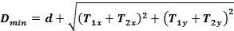
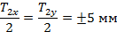
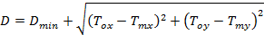
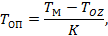
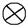

СТРОИТЕЛЬНЫЕ НОРМЫ И ПРАВИЛА
|
УТВЕРЖДАЮ Заместитель министра К.К. Липодат 22 марта 1985 г. |
УСТАНОВКА
ТЕХНОЛОГИЧЕСКОГО
ОБОРУДОВАНИЯ НА ФУНДАМЕНТАХ
ВСН 361-85
Минмонтажспецстрой СССР
Москва 2000
Настоящие ведомственные строительные нормы (ВСН) разработаны ВНИИмонтажспецстроем при участии Гипрометаллургмонтажа, ВНИПКИлегпродмонтажа и Гипрохиммонтажа в развитие СНиП 3.05.05-84.
В ВСН изложены требования к подготовке и производству работ по установке технологического оборудования в проектное положение на фундаментах.
С введением в действие настоящих ВСН утрачивает силу ВСН 361-76 «Инструкция по установке технологического оборудования на фундаментах».
Настоящие ВСН разработаны П.П. Алексеенко (рук. разработки), В.А. Калугиным (отв. исполнитель), В.А. Карасиком, И.Д. Кияновым, В.А. Батановым, А.И. Бичучем и С.Н. Вашиным при участии Г.Д. Дудко (Гипрометаллургмонтаж), А.С. Никифорова (Востокметаллургмонтаж), В.Г. Наумова (ВНИПКИлегпродмонтаж) и М.Л. Эльяша (Гипрохиммонтаж).
СОГЛАСОВАНО:
Минтяжстрой СССР, заместитель начальника Главтехуправления -
письмо № 20-3-12/1769 от 13 декабря 1984 г.
Минпромстрой СССР, заместитель начальника Главтехуправления -
письмо № 18-2-00/3038 от 20 декабря 1984 г.
Минхимпром СССР, заместитель начальника управления проектирования и капстроительства - письмо № 05-5-4/2391 от 23 ноября 1984 г.
Минчермет СССР, главный инженер управления Черметпроект -
письмо № 10-188 от 11 января 1985 г.
Миннефтехимпром СССР, заместитель начальника управления проектирования и капстроительства - письмо № 15/3-12-1171 от 12 декабря 1984 г.
Минхиммаш, начальник технического управления -
письмо № 11-10-4/1346 от 14 декабря 1984 г.
Минтяжмаш, начальник управления проектирования и капстроительства -
письмо № 5-5118-3/118 от 24 января 1985 г.
Минэнергомаш, начальник технического управления -
письмо № 2-3333/44 от 4 января 1985 г.
Минлегпищемаш, начальник технического управления -
письмо № 14-0-16/3274 от 26 декабря 1984 г.
|
Министерство монтажных и специальных строительных работ СССР (Минмонтажспецстрой СССР) |
Ведомственные строительные нормы |
ВСН 361-65 |
|
Минмонтажспецстрой СССР |
||
|
Установка технологического оборудования на фундаментах |
Взамен ВСН 361-76 ММСС СССР |
1.1. Настоящие ведомственные строительные нормы распространяются на монтаж технологического оборудования промышленных предприятий и устанавливают требования к проектированию, производству и приемке работ по установке машин, механизмов и аппаратов (или их базовых деталей, узлов и блоков) в проектное положение на фундаментах.
1.2. Требования ВСН не распространяются на установку оборудования без закрепления фундаментными болтами, а также на установку оборудования с использованием подкладок, высоту которых регулируют в процессе эксплуатации, или специальных (вибро-, электро- и теплоизолирующих) опор.
1.3. Настоящие ВСН разработаны на основе и в дополнение к СНиП 3.05.05-84 и относятся к технологическому оборудованию.
1.4. Требования ВСН обязательны для организаций Минмонтажспецстроя СССР, осуществляющих проектирование, подготовку и производство работ по монтажу оборудования, а также для строительных организаций, выполняющих работы по подливке оборудования. Требования ВСН следует учитывать при проектировании промышленных объектов и разработке конструкторской документации на оборудование, включая инструкции по эксплуатации (монтажу).
2.1. Поставляемое предприятиями-изготовителями оборудование должно быть технологичным с точки зрения монтажа (ГОСТ 14.201-83). При этом должны быть соблюдены монтажно-технологические требования, изложенные в ГОСТ 24444-80, отраслевых стандартах, разработанных в его развитие, и СНиП 3.05.05-84.
|
Внесены ВНИИмонтажспецстроем |
Утверждены Минмонтажспецстроем СССР 22 марта 1985 г. |
Срок введения
в действие |
2.2. Сопроводительная техническая документация на оборудование (комплектность по ГОСТ 24444-80) должна содержать сведения о порядке монтажа поставляемых изделий, нормы точности на установку оборудования, технологические решения по выполнению монтажных работ и др., как это предусмотрено ГОСТ 2.109-73 и ГОСТ 2.601-68*.
При разработке инструкций по эксплуатации (монтажу) рекомендуется в качестве типовых, практически проверенных способов и средств установки оборудования (в соответствии с требованиями ГОСТ 2.601-68* и ГОСТ 14.201-83) использовать способы и средства, изложенные в настоящих ВСН.
предусмотрен зазор между опорной частью оборудования и поверхностью фундаментов;
определены и выдержаны при производстве работ размеры фундаментов с учетом требований к установке фундаментных болтов и подливке оборудования;
в соответствии со схемами геодезического обоснования монтажа осуществлена установка геодезических знаков, используемых при выверке оборудования;
исключены причины, вызывающие недопустимую осадку фундаментов.
2.4. Работы по установке оборудования на фундаментах следует выполнять в соответствии с утвержденными или согласованными по установленной форме рабочей и проектно-сметной документацией, проектом организации строительства, проектом производства работ и документацией предприятий-изготовителей оборудования.
Наряду с требованиями настоящих ВСН и технической документации заводов-изготовителей следует руководствоваться нормативными документами и стандартами, приведенными в рекомендуемом приложении 1.
2.5. Организации Минмонтажспецстроя СССР в процессе подготовки производства работ (на стадиях проектирования и изготовления оборудования, проектирования промышленных объектов, организации и выполнении строительных работ) при согласовании технической документации в установленном порядке должны осуществлять контроль за соблюдением требований пп. 2.1, 2.2 и 2.3.
Состав и требования к документации, передаваемой монтажной организации, а также порядок взаимоотношений с заказчиком и генеральным подрядчиком - по СниП 3.05.05-84.
3.1. Подготовка к производству работ должна включать в себя комплекс мероприятий по технологическому и организационно-техническому обеспечению монтажа оборудования. Состав и содержание мероприятий по организационно-техническому обеспечению монтажа - по СНиП 3.05.05-84.
3.2. Технологическое обеспечение монтажа оборудования должно быть направлено на создание условий для достижения требуемой точности установки оборудования на месте эксплуатации с наименьшими трудовыми и материальными затратами. Мероприятия по технологическому обеспечению следует осуществлять как на стадии проектирования и изготовления оборудования, так и при разработке технологической документации в составе ППР (технологические схемы и карты).
3.3. При подготовке производства работ по установке оборудования должны быть обеспечены:
преобладающее использование способов установки оборудования без остающихся в массиве подливки пакетов металлических подкладок, включая широкое применение регулировочных винтов оборудования;
возможность применения технологии «безвыверочного» монтажа;
достоверность и точность контроля положения устанавливаемого оборудования по всем заданным показателям точности;
собираемость соединений «оборудование-фундамент» без дополнительных пригоночных работ по исправлению положения фундаментных болтов;
преимущественное применение конструкций фундаментных болтов, устанавливаемых в просверленные в готовых фундаментах скважины (по ГОСТ 24379.0-80 и ГОСТ 24379.1-80).
Мероприятия по реализации изложенных требований приведены в рекомендуемом приложении 2.
3.4. При разработке ППР (форма задания на разработку, состав и содержание - по ВСН 319-77), технологических схем или карт применяемые технологические решения по установке оборудования в проектное положение на фундаментах должны основываться на требованиях и указаниях технической документации предприятий-изготовителей и включать в себя следующие сведения:
способы и средства установки оборудования, в том числе данные по типам, размерам и местам расположения опорных элементов (схемы установки опорных элементов приведены в рекомендуемом приложении 3);
методы и средства контроля точности положения выверяемого оборудования с указанием используемых баз и производственных монтажных допусков;
допуски на высотное положение опорных элементов с учетом используемых методов обеспечения заданных показателей точности установки оборудования (допуски рекомендуется назначать в соответствии с приложением 2);
усилия (крутящие моменты) затяжки фундаментных болтов, средства для контроля усилий закрепления, рекомендуемый инструмент и устройства для закрепления оборудования.
При разработке документации по установке оборудования рекомендуется максимально использовать типовые технологические решения, в том числе стандартизованные, в виде ОСТ на типовые технологические процессы монтажа, ВСН и МСН по монтажу конкретных видов оборудования.
4.1.1. К работам по установке оборудования разрешается приступать после подписания актов готовности фундаментов (приемка фундаментов и форма актов должны соответствовать СНиП 3.05.05-84).
Перед установкой оборудования выполняют, как правило, следующие подготовительные и вспомогательные работы:
расконсервацию оборудования;
укрупнительную сборку (при необходимости);
подготовку площадок на поверхности фундаментов для установки опорных элементов. Технические характеристики механизированного инструмента для выравнивания поверхностей фундаментов при подготовке площадок под опорные элементы приведены в рекомендуемом приложении 4;
вынесение при необходимости дополнительных (рабочих) осей и отметок (при помощи струн, отвесов и т.п.).
установку опорных элементов на фундаментах;
предварительную установку оборудования на опорные элементы с совмещением отверстий базовой детали (станины, рамы, основания) с фундаментными болтами;
введение оборудования в заданное положение в плане, по высоте и горизонтальности (вертикальности) путем осуществления необходимых регулировочных перемещений с контролем фактического положения и предварительной фиксацией перед подливкой;
подливка зазора «оборудование-фундамент»;
закрепление оборудования затяжкой фундаментных болтов с заданным усилием.
Требуемая точность положения оборудования по высоте и горизонтальности может быть достигнута методом безвыверочного монтажа, т.е. без использования регулировочных операций - за счет установки опорных элементов в пределах расчетных допусков (порядок расчета допусков приведен в приложении 2).
4.1.3. При выверке оборудования в плане регулировочные перемещения осуществляют с помощью грузоподъемных механизмов, домкратов и монтажных приспособлений в пределах зазоров между стенками отверстий базовой детали оборудования и стержнями предварительно установленных фундаментных болтов или в пределах зазоров колодцев под закрепляемые при подливке оборудования фундаментные болты.
4.1.4. Регулировку оборудования по высоте и горизонтальности осуществляют с использованием опорных элементов различных конструкций.
4.1.5. В зависимости от технологии установки и конструктивных особенностей соединений «оборудование-фундамент» (рис. 1) различают постоянные и временные опорные элементы.
Рис. 1. Типы соединений «оборудование-фундамент»:
а - с опиранием
на бетонную подливку при использовании временных опорных элементов (тип 1);
б - c опиранием на
постоянные опорные элементы (тип 2); в - с опиранием непосредственно на
фундамент (тип 3); 1 - оборудование; 2 - фундаментный болт; 3 - подливка; 4 -
фундамент;
5 - временный опорный элемент; 6 - постоянный опорный элемент
Применение временных опорных элементов характерно для соединений типа 1 (рис. 1, а). При образовании этих соединений опорные элементы применяют только для регулировки положения оборудования перед его закреплением на массиве подливки.
В соединениях типа 2 (рис. 1, б) используют постоянные опорные элементы как для выверки, так и закрепления оборудования. Подливка в этом случае имеет вспомогательное значение.
Соединения типа 3 (рис. 1, в) применяют в случаях, когда допуски на установку оборудования по высоте сопоставимы с показателями точности изготовления фундаментов.
4.1.6. При установке оборудования на фундаментах преимущественно должны использоваться соединения типов 1 и 3 (бесподкладочный монтаж). Соединение типа 2 рекомендуется использовать для установки на опорных элементах оборудования, требующего окончательного закрепления сразу после выверки (например, вертикальных аппаратов колонного типа).
Конструкции соединений «оборудование-фундамент» должны быть выбраны при проектировании оборудования и указаны в монтажных чертежах или инструкциях по эксплуатации (монтажу). При отсутствии таких указаний выбор типов соединений и видов опорных элементов должен быть осуществлен монтажными организациями и отражен в технологических картах или схемах.
4.1.7. В качестве постоянных опорных элементов при установке оборудования на месте эксплуатации применяют:
пакеты плоских или клиновых металлических подкладок;
опорные башмаки;
жесткие опоры (бетонные подушки).
При использовании для установки оборудования пакетов или башмаков эти элементы должны быть включены в комплект поставки оборудования.
4.1.8. В качестве временных опорных элементов могут быть использованы:
регулировочные (отжимные) винты оборудования;
установочные гайки фундаментных болтов;
инвентарные домкраты;
сокращенное количество пакетов металлических подкладок;
винтовые опорные устройства (винтовые подкладки) и др. Технические характеристики приспособлений и устройств, используемых в качестве временных опорных элементов, приведены в рекомендуемом приложении 6.
Количество опорных элементов и их расположение по контуру оборудования следует назначать из условий обеспечения устойчивого положения выверенного оборудования на период подливки и исключения недопустимых прогибов опорных частей оборудования под действием собственной массы и усилий предварительной затяжки фундаментных болтов.
4.1.10. Площадь опирания временных опорных элементов (S, см2) на фундамент определяют из следующего соотношения:
S > 6 × n × F + 0,015 × m,
где n - число фундаментных болтов, затягиваемых для фиксации оборудования перед подливкой;
m - масса оборудования, кг;
F - расчетная площадь поперечного сечения фундаментных болтов, cм2 (табл. 1).
Таблица 1
Площадь поперечного сечения фундаментных болтов
|
Диаметр болта, d, мм |
12 |
16 |
20 |
24 |
30 |
36 |
42 |
48 |
56 |
64 |
|
Площадь сечения, F, см2 |
0,77 |
1,44 |
2,25 |
3,24 |
5,19 |
7,59 |
10,34 |
13,80 |
18,74 |
25,12 |
Для регулировочных винтов оборудования S - площадь опорной пластины.
4.1.11. Суммарную грузоподъемность (W, н) временных опорных элементов определяют по соотношению:
W > 1,3 × m × g + n × F × σ0,
где σ0 - расчетное напряжение предварительной затяжки фундаментных болтов (σ0 = 2100 - 2500 Н/см2);
g = 9,8 м/с2.
4.1.12. Выверку оборудования осуществляют относительно высотных отметок и осей, задаваемых соответственно реперами и плашками, а также поверхностями или осями (базами) ранее смонтированного оборудования. Базами выверяемого оборудования (выверочными базами) могут быть исполнительные поверхности, обработанные участки на внешних поверхностях оборудования, установочные (опорные) поверхности и др. Требования к выверочным базам приведены в приложении 2.
4.1.13. Применяемые измерительные средства должны соответствовать требованиям стандартов и технических условий и обеспечивать заданную точность контроля положения устанавливаемого оборудования (приложение 2).
4.2.1. Способы установки оборудования на фундаментах назначают в зависимости от конструктивных особенностей соединений «оборудование-фундамент» и используемых опорных элементов.
Способ установки с помощью регулировочных винтов
4.2.2. Опорные пластины (рис. 2, позиция 3) устанавливают на фундаменте в соответствии с расположением регулировочных винтов в опорной части оборудования. Места расположения опорных пластин на фундаментах выравнивают. Предельные отклонения площадок под опорные пластины от горизонтальности должны быть не более 10 мм на 1 м.
4.2.3. Перед установкой оборудования на фундаменте размещают вспомогательные опоры, на которые опускают оборудование.
4.2.4. При установке оборудования без вспомогательных опор регулировочные винты в исходном положении должны выступать ниже опорной поверхности оборудования на одинаковую величину, но не более чем на 20 мм.
Рис. 2. Выверка
оборудования с помощью
регулировочных винтов:
1 -
регулировочный винт; 2 - контргайка; 3 - опорная пластина;
4 - фундамент; 5 - опорная часть оборудования; 6 - фундаментный болт
4.2.5. Положение оборудования по высоте и горизонтальности следует регулировать всеми винтами, не допуская в процессе выверки его отклонения от горизонтальности более чем 10 мм на 1 м.
4.2.6. После завершения выверки оборудования положение регулировочных винтов необходимо фиксировать стопорными гайками (рис. 2, позиция 2).
Перед подливкой резьбовую часть регулировочных винтов следует предохранять от соприкосновения с бетоном посредством обертывания плотной бумагой или нанесения консистентной смазки.
4.2.7. Конструкции, размеры и технические требования на изготовление регулировочных винтов и отверстий под них в станинах оборудования должны соответствовать отраслевым стандартам машиностроительных министерств. В случае отсутствия соответствующих стандартов рекомендуется при изготовлении винтов использовать данные, приведенные в табл. 2.
Таблица 2
Технические характеристики регулировочных винтов
|
Величина, мм |
||||||
|
Диаметр резьбы |
20 |
24 |
30 |
36 |
42 |
48 |
|
Шаг резьбы |
2,5 |
3,0 |
3,5 |
4,0 |
5,5 |
5,0 |
|
Размер «под ключ» |
27 |
32 |
41 |
50 |
60 |
70 |
|
Радиус опорной сферы |
20 |
25 |
32 |
32 |
40 |
50 |
|
Размеры опорных пластин: |
||||||
|
толщина |
8 |
8 |
10 |
12 |
14 |
16 |
|
длина |
60 |
80 |
100 |
120 |
130 |
140 |
|
ширина |
60 |
80 |
100 |
120 |
130 |
140 |
Ширина опорных пластин может быть увеличена с учетом соотношения по п. 4.1.10.
4.2.8. Перед окончательным закреплением оборудования регулировочные винты следует отвернуть на 2 - 3 оборота. Многократно используемые винты вывинчивают полностью, а оставшиеся отверстия заделывают пробками или цементным раствором с нанесением маслостойкой краски. Затем закрепляют оборудование затяжкой фундаментных болтов с заданным усилием.
Способ установки с помощью гаек фундаментных болтов
4.2.9. Фундаментные болты, используемые совместно с установочными гайками в качестве временных опорных элементов, должны иметь удлиненную до 6d резьбовую часть.
4.2.10. Настоящий способ может быть применен в трех вариантах:
с выверкой на установочных гайках с упругими элементами (рис. 3);
с выверкой непосредственно на установочных гайках (рис. 4);
с выверкой на ослабленных (срезных) установочных гайках (рис. 5).
Рис. 3. Схема выверки оборудования на установочных гайках с упругим элементом:
а - установка с
завышением на 2 - 3 мм; б - регулировка положения затяжкой крепежных
гаек;
в - установка дополнительных гаек при использовании съемных болтов или
болтов с цангами;
1 - оборудование; 2 - фундаментный болт; 3 - крепежная гайка; 4 - тарельчатая
шайба;
5 - установочная гайка; 6 - фундамент; 7 - подливка; 8 - вспомогательная гайка;
9 - шайба
Рис. 4. Схема выверки оборудования непосредственно на установочных гайках:
а - установка в
проектное положение; б - подливка; в - отвинчивание установочной
гайки и закрепление:
1 - оборудование; 2 - фундаментный болт; 3 - крепежная гайка; 4 - установочная
гайка;
5 - фундамент; 6 - подливка; 7 - опалубка
4.2.11. В качестве упругих элементов рекомендуется применять металлические тарельчатые (стандартные или специальные), резиновые или пластмассовые шайбы. В рекомендуемом приложении 5 приведены характеристики металлических тарельчатых (специальных) шайб.
4.2.12. Установку оборудования с выверкой на тарельчатых шайбах и установочных гайках выполняют в такой последовательности (см. рис. 3):
Рис. 5. Схема выверки оборудования на ослабленных установочных гайках:
а - в проектное
положение по высоте и горизонтальности; б - подливка и последующее
закрепление;
1 - оборудование; 2 - фундаментный болт; 3 - крепежная гайка; 4 - специальная
установочная гайка;
5 - фундамент; 6 - подливка
регулируют установочные гайки с шайбами по высоте так, чтобы верх тарельчатой шайбы был на 2 - 3 мм выше проектной отметки опорной поверхности оборудования;
опускают оборудование на опорные элементы;
проводят выверку оборудования с регулировкой положения выборочной затяжкой крепежных гаек;
осуществляют подливку оборудования и последующее закрепление оборудования посредством затяжки крепежных гаек с заданным усилием.
4.2.13. При установке оборудования без использования упругих элементов его выверку осуществляют регулировкой положения непосредственно установочными гайками. При этом исходное высотное положение установочных гаек должно быть выдержано с точностью +1 мм. При безвыверочном монтаже гайки устанавливают по высоте с расчетной точностью.
4.2.14. Особенностями схемы установки оборудования, приведенной на рис. 4, являются:
выгораживание установочных гаек перед подливкой опалубкой, которую удаляют после схватывания бетона;
свинчивание установочных гаек на 3 - 4 мм перед окончательной затяжкой фундаментных болтов.
4.2.15. При установке оборудования непосредственно на установочных гайках исключение работ по п. 4.2.14 может быть достигнуто за счет использования ослабленных установочных гаек, резьба которых сминается при окончательной затяжке фундаментных болтов (рис. 5).
В качестве установочных гаек в этом случае рекомендуется использовать гайки из менее прочного материала, чем крепежные гайки, а также стандартные гайки с уменьшенной на 50 - 70 % высотой или с проточками и т.д.
4.2.16. При использовании фундаментных болтов с распорными цангами или втулками для их фиксации на фундаменте необходимо устанавливать дополнительные гайки с шайбами (рис. 3, в).
Способ установки с помощью инвентарных домкратов
4.2.17. Для установки оборудования в проектное положение по высоте и горизонтальности могут быть использованы винтовые, клиновые, гидравлические и другие домкраты, обеспечивающие требуемую точность, удобство и безопасность регулировки (см. приложение 5).
домкраты, размещенные на подготовленных фундаментах, предварительно регулируют по высоте с точностью +1 мм для последующей выверки оборудования или с расчетной точностью при безвыверочном монтаже;
опускают на домкраты оборудование;
выгораживают инвентарные домкраты опалубкой;
осуществляют подливку оборудования, извлекают домкраты, а затем затягивают фундаментные болты с заданным усилием.
Оставшиеся ниши заполняют составом, используемым при подливке.
4.2.19. При регулировке положения оборудования в плане отрыв основания домкрата от поверхности фундамента не допускается.
Способ установки на пакетах подкладок
4.2.20. Пакеты металлических подкладок применяют в качестве постоянных (при наличии специальных указаний в документации на оборудование) и временных (при их сокращенном количестве) опорных элементов.
4.2.21. Пакеты набирают из стальных или чугунных установочных подкладок толщиной 5 мм и более и регулировочных подкладок толщиной 0,5 - 5 мм. Общее число подкладок в пакете, как правило, не должно превышать 5 шт.
4.2.22. При использовании подкладок в качестве временных опорных элементов требуемое положение оборудования по высоте и горизонтальности может быть достигнуто:
регулировочными перемещениями; при этом исходное высотное положение опор не должно отличаться от проектного (с точностью +1 мм);
без использования регулировочных перемещений, за счет установки опор с расчетной точностью по высоте.
Общая технологическая последовательность установки оборудования на сокращенном количестве пакетов подкладок соответствует процессу по п. 4.1.2.
выставляют пакеты подкладок на фундаменте на 1,5 - 2 мм выше проектной отметки опорной поверхности оборудования (при наличии в пакете клиновой пары исходное положение пакетов должно быть на 4 - 6 мм ниже проектной отметки);
опускают оборудование на опорные элементы;
осуществляют выверку оборудования с использованием регулировочных подкладок или перемещений клиновых подкладок. При этом выверяют оборудование по высоте, устанавливая базовые поверхности на 1 - 1,5 мм выше проектной отметки;
осуществляют затяжку фундаментных болтов (с заданным усилием и контролем положения базовых поверхностей);
производят подливку оборудования.
4.2.24. Рекомендуемые размеры плоских установочных подкладок приведены в табл. 3. Количество и места расположения пакетов подкладок выбирают с учетом требований, приведенных в пп. 4.1.9 - 4.1.11.
Таблица 3
Плоские установочные подкладки
|
Размеры подкладок, мм |
Материал |
|||
|
длина |
ширина |
высота |
||
|
Более 100 |
250 |
120 |
80 |
Чугун |
|
250 |
120 |
60 |
||
|
250 |
120 |
40 |
||
|
250 |
120 |
30 |
Чугун или сталь |
|
|
250 |
120 |
30 |
Сталь |
|
|
250 |
120 |
10 |
||
|
250 |
120 |
5 |
||
|
30 - 100 |
200 |
100 |
50 |
Чугун или сталь |
|
200 |
100 |
30 |
||
|
260 |
100 |
20 |
Сталь |
|
|
200 |
100 |
10 |
||
|
200 |
100 |
5 |
||
|
5 - 30 |
150 |
80 |
50 |
Чугун или сталь |
|
150 |
80 |
30 |
||
|
150 |
80 |
20 |
Сталь |
|
|
150 |
80 |
10 |
||
|
150 |
80 |
5 |
||
|
Менее 5 |
100 |
60 |
30 |
Чугун или сталь |
|
100 |
60 |
20 |
||
|
100 |
60 |
10 |
Сталь |
|
|
100 |
60 |
5 |
||
Таблица 4
Размеры плоских подкладок пирамидальных пакетов
|
Номера подкладок |
0 |
1 |
2 |
3 |
4 |
5 |
6 |
7 |
8 |
|
Рекомендуемый размер, мм |
45´60 |
55´85 |
75´100 |
100´140 |
130´200 |
150´250 |
190´280 |
210´320 |
260´400 |
|
Оптимальная толщина, мм |
15 - 20 |
15 - 20 |
18 - 22 |
20 - 25 |
22 - 27 |
25 - 30 |
27 - 32 |
30 - 35 |
32 - 38 |
|
Масса, кг |
0,32 - 0,42 |
0,70 - 0,93 |
1,05 - 1,30 |
2,20 - 2,70 |
4,40 - 5,40 |
7,20 - 8,60 |
11,15 - 13,50 |
16,0 - 18,50 |
26,0 - 31,0 |
Таблица 5
Наборы пирамидальных пакетов подкладок
|
П1 |
П2 |
П3 |
П4 |
П5 |
П6 |
П7 |
|
|
Номера подкладок |
2, 1, 0 |
3, 1, 0, 0 |
4, 2, 0, 0 |
5, 3, 1, 0 |
6, 4, 2, 0 |
7, 5, 3, 1 |
8, 6, 4, 2 |
|
h, мм |
50 - 65 |
55 - 80 |
70 - 90 |
75 - 95 |
80 - 95 |
85 - 95 |
95 - 105 |
|
Масса пакета, кг |
2,0 - 2,6 |
3,5 - 4,6 |
6,0 - 7,5 |
10,4 - 12,7 |
16,9 - 20,6 |
26,1 - 30,7 |
43,5 - 51,3 |
|
Размер фундаментного болта |
М24 |
М30 |
М56 - 64 (2) |
М72 - 80 (2) |
М90 (2) |
М100 (2) |
М125 (2) |
|
М36 (2) |
М42 - 48 (2) |
Примечания: 1. В качестве верхней подкладки рекомендуется использовать встречно-клиновую.
2. Цифра в скобках указывает, что около фундаментального блока следует устанавливать два пакета.
4.2.25. В табл. 4 и 5 приведены рекомендуемые размеры установочных подкладок пирамидальных пакетов (рис. 6), использование которых для рассматриваемой схемы установки оборудования является наиболее предпочтительным. Рекомендуемые размеры плоско-клиновых подкладок приведены в табл. 6 (рис. 7).
Рис. 6. Пирамидальный пакет подкладок:
0; 1; 3; 5 - номера подкладок
Рис. 7. Клиновые подкладки
Таблица 6
Размеры клиновых подкладок
|
Размеры, мм |
Размеры фундаментных болтов |
Пределы регулирования, мм |
Масса 1 шт., кг |
||||
|
а |
б |
п |
m |
||||
|
75×50 |
75 |
50 |
7,5 |
15 |
До М36 |
7,5 |
0,33 |
|
100×75 |
100 |
75 |
10 |
20 |
М36 - М64 |
10 |
0,9 |
|
150×100 |
150 |
100 |
10 |
25 |
М64 - М90 |
15 |
2,1 |
Установка оборудования на жестких опорах (бетонных подушках)
4.2.26. Достижение требуемого положения оборудования по высоте и горизонтальности при помощи жестких опор осуществляется, как правило, с использованием метода безвыверочного монтажа. Допускается применение дополнительных регулировочных подкладок, а также клиновых пар для выверки особо точного оборудования.
4.2.27. Бетонные подушки изготавливают непосредственно на фундаментах. Точность высотного положения опор следует определять расчетным путем в соответствии с рекомендуемым приложением 2.
4.2.28. Для изготовления опор следует применять бетон марки не ниже М200 с заполнителем в виде щебня или гравия фракции 5 - 12 мм. Бетонные опоры изготавливают строительные организации по заявке монтажной организации.
4.2.29. Удельное давление на опору от усилий затяжки фундаментных болтов не должно превышать 700 Н/см2.
4.2.30. Бетонные опоры должны быть снабжены металлической пластиной, как правило, с механически обработанной опорной поверхностью (рис. 8).
Расстояние (S) от пластины до края бетонной подушки должно быть не меньше 30 мм, т.е. S > 30 мм. Установку пластин с заданной точностью выполняют монтажные организации.
4.2.31. Для изготовления жестких опор в специальную опалубку на очищенную и увлажненную поверхность фундамента загружают порцию бетонной смеси до уровня, на 10 - 20 мм превышающего заданный. Затем на несхватившийся бетон укладывают пластину и легкими ударами молотка погружают ее до проектной отметки.
В рекомендуемом приложении 6 приведен ряд устройств для точного изготовления бетонных опор с металлическими пластинами.
При использовании клиновых пар для выверки особо точного оборудования рекомендуется до изготовления жестких опор предусмотреть занижение поверхности фундамента (или участков поверхности) на 20 - 30 мм.
4.2.32. Общая технологическая последовательность установки оборудования на жестких опорах соответствует п. 4.2.23. При этом исходное положение опор следует определять из условия отсутствия погрешностей закрепления.
Рис. 8. Бетонная опора с металлической пластиной:
1 - фундамент; 2 - бетонная опора; 3 - металлическая пластина
Способ установки на винтовых подкладках
4.2.33. Последовательность установки оборудования соответствует п. 4.2.18. Характеристики винтовых подкладок приведены в рекомендуемом приложении 5.
5.1. После выверки и предварительного (для конструкций соединений типа 1) или окончательного (для конструкций соединений типа 2) закрепления оборудование подливают, заполняя бетонной смесью зазор между опорной частью оборудования и фундаментом.
5.2. Толщина слоя подливки под оборудованием должна составлять 50 - 60 мм. При ширине опорной части базовой детали оборудования более 2 м толщину слоя подливки следует принимать равной 80 - 100 мм. При наличии на установочной поверхности оборудования ребер жесткости зазор принимают от низа ребер (рис. 9).
5.3. Марка бетона, используемого для подливки, должна быть не ниже марки бетона фундамента, а для соединений типа 1, или для установки тяжеловесного уникального оборудования - не менее, чем на одну ступень выше (но не ниже марки 200).
5.4. Подбор состава бетона следует производить в соответствии с «Руководством по производству бетонных работ» (М.: Стройиздат, 1975) и СН 488-76. Для уменьшения или устранения усадки бетонной смеси и повышения ее подвижности следует вводить добавки, предусмотренные СН 488-76. Величина осадки конуса для бетонной смеси должна составлять 5 - 8 cм. Предельное значение усадки бетонной смеси, используемой для подливки соединений «оборудование-фундамент» типа 1 (см. рис. 1, а), должно составлять не более 0,07 % толщины слоя подливки. Размер элементов фракции заполнителя (щебня, гравия) составляет 5 - 20 мм.
5.5. Работы по подливке оборудования выполняют не позже 48 ч после проверки точности выверки оборудования и оформления соответствующего акта и заявки. Работы производят под непосредственным контролем представителя организации, монтирующей оборудование.
5.6. Подливаемые поверхности оборудования фундаментов должны быть предварительно очищены от масел и смазки. Поверхности фундаментов также должны быть освобождены от посторонних предметов и увлажнены (при этом скопление воды в углублениях и приямках не допускается).
5.7. Производить подливку оборудования при температуре окружающего воздуха ниже +5 °С без подогрева укладываемой смеси (электроподогрева, пропаривания и т.п.) не разрешается.
5.8. Бетонную смесь или раствор подают через отверстие в опорной части или с одной стороны подливаемой детали до тех пор, пока с противоположной стороны смесь или раствор не достигнут уровня, на 20 - 30 мм превышающего высоту основной части подливки. Подачу смеси или раствора следует производить без перерывов. Уровень смеси раствора со стороны подачи должен превышать уровень подливаемой поверхности оборудования не менее чем на 100 мм.
Рис. 9. Схема подливки оборудования:
1 - фундамент; 2
- подливка; 3 - опорная часть оборудования;
4 - ребро жесткости опорной части
5.9. Подачу бетонной смеси или раствора рекомендуется осуществлять вибрированием с применением лотка-накопителя, причем вибратор не должен касаться опорных частей оборудования. При ширине подливаемого пространства более 1200 мм установка лотка-накопителя обязательна. Уровень бетонной смеси при подливке с лотком должен быть выше опорной поверхности оборудования приблизительно на 300 мм.
5.10. Расстояние от края опорной части оборудования до края слоя подливки должно быть равно удвоенной высоте слоя подливки, минимальное расстояние - 100 мм.
Высота лежащего вне опорной части оборудования слоя подливки должна на 20 - 30 мм превышать высоту основной части подливки. Поверхность подливки, примыкающая к опорной части, должна иметь уклон в сторону от оборудования, равный 1:50.
5.11. Поверхность слоя подливки в течение трех суток после завершения работ необходимо систематически увлажнять. При этом для сохранения влаги рекомендуется открытые участки поверхности подливки засыпать древесными опилками или укрыть мешковиной.
5.12. Для защиты материала подливки от коррозии в агрессивных средах следует применять покрытия в соответствии с требованиями СНиП по защите строительных конструкций от коррозии.
6.1. При закреплении оборудования фундаментные болты должны быть затянуты с усилием (крутящим моментом), указанным в технической документации предприятия-изготовителя. При отсутствии таких указаний величина крутящего момента при окончательной затяжке болтов должна соответствовать значениям, приведенным в табл. 7.
6.2. Затяжку болтов при бесподкладочном методе монтажа (с образованием соединений «оборудование-фундамент» типа 1) следует выполнять в два этапа с окончательной затяжкой после твердения подливки.
6.3. При предварительном закреплении оборудования на время подливки затяжку гаек фундаментных болтов следует производить вблизи опорных элементов с помощью стандартных гаечных ключей без надставок. Усилия предварительного закрепления должны составлять 50 - 70 % регламентированных усилий закрепления. При использовании в качестве временных опорных элементов регулировочных винтов оборудования или установочных гаек фундаментных болтов усилие на ключе при предварительной затяжке не должно быть более 100 Н.
Таблица 7
Моменты затяжки фундаментных болтов
|
10 |
12 |
16 |
20 |
24 |
30 |
36 |
42 |
48 |
56 |
64 |
72×6 |
90×6 |
100×6 |
|
|
Крутящий момент, Н×м |
8 - 12 |
12 - 24 |
30 - 60 |
50 - 100 |
130 - 250 |
300 - 350 |
600 - 950 |
1000 - 1500 |
1100 - 2300 |
2200 - 3700 |
4000 - 6000 |
5000 - 8600 |
8000 - 12000 |
12000 - 16800 |
6.4. Окончательную затяжку необходимо производить после достижения материалом подливки не менее 70 % проектной прочности, о чем следует получить соответствующую справку от строительной организации.
6.5. Окончательную затяжку фундаментных болтов следует производить равномерно в 2 - 3 обхода. Болты следует затягивать в шахматном порядке симметрично относительно осей опорной части оборудования, начиная с болтов, расположенных на этих осях.
6.6. Для затяжки фундаментных болтов следует применять ручной или механизированный инструмент, приведенный в рекомендуемом приложении 7. Затяжку болтов с диаметром резьбы свыше М64 рекомендуется производить специальными гидравлическими ключами или другими средствами в соответствии с требованиями документации предприятий-изготовителей оборудования.
6.7. При наличии специальных указаний в технической документации гайки фундаментных болтов после окончательной затяжки должны быть предохранены от самоотвинчивания путем их стопорения.
6.8. Усилия затяжки фундаментных болтов рекомендуется контролировать по величине крутящего момента, по перемещению или удлинению болта, углу поворота гайки или по величине давления в гидросистеме специальных гидроключей.
6.9. После опробования оборудования под нагрузкой следует проверить и при необходимости дотянуть фундаментные болты.
7.1. При установке оборудования в проектное положение на фундаментах необходимо осуществлять контроль качества выполняемых работ, включая:
проверку фактического положения в плане, по высоте и горизонтальности (вертикальности) оборудования (его узлов) в процессе монтажа;
исполнительную съемку (приемочный контроль) фактического положения в плане, по высоте и горизонтальности (вертикальности) оборудования (его узлов) по окончании монтажа.
7.2. Проверке в процессе монтажа подлежит все устанавливаемое оборудование, результаты измерений используют при выполнении регулировочных операций.
7.3. Исполнительной съемке подлежит все смонтированное оборудование, предъявляемое к приемке заказчиком. При этом проверяют соответствие заданных и фактических показателей точности относительного положения оборудования на фундаментах.
Показатели точности установки оборудования должны быть отражены в установочных формулярах или монтажных чертежах (с указанием проектных размеров и фактических отклонений). Соответствие фактического положения установленного оборудования проектному должно быть заверено подписями представителей монтажной организации, заказчика и шефмонтажа, если последние участвуют в производстве работ.
7.4. Приемка выполненных работ и состав исполнительской документации, предъявляемой монтажной организацией при сдаче оборудования, должны соответствовать СНиП 3.05.05-84.
ПЕРЕЧЕНЬ ДОКУМЕНТОВ, РЕКОМЕНДУЕМЫХ К ИСПОЛЬЗОВАНИЮ ПРИ ПОДГОТОВКЕ И ПРОИЗВОДСТВЕ РАБОТ
|
«Технологическое оборудование и технологические трубопроводы». |
|
|
2. СНиП 3.01.01-84 |
«Организация строительного производства». |
|
3. СНиП 2.09.03-86 |
«Сооружения промышленных предприятий». |
|
«Приемка в эксплуатацию законченных строительством объектов. Общие положения». |
|
|
5. СНиП 3.01.03-83 |
«Геодезические работы в строительстве». |
|
«Основания и фундаменты». |
|
|
«Бетонные и железобетонные конструкции монолитные». |
|
|
«Техника безопасности в строительстве». |
|
|
9. СН 471-75 |
«Инструкция по креплению технологического оборудования фундаментными болтами». |
|
10. ВСН 319-77 |
«Инструкция по разработке проектов производства монтажных работ». |
|
11. ГОСТ 24444-80 |
«Оборудование технологическое. Общие монтажно-технологические требования». |
|
12. ГОСТ 21778-81, |
Система обеспечения геометрической точности в строительстве» |
|
ГОСТ 21779-76, |
|
|
13. ГОСТ 24379.0-80, |
«Болты фундаментные. Общие технические условия. Конструкция и размеры». |
|
14. ГОСТ 14.201-83 |
«Общие правила обеспечения технологичности конструкций изделий». |
|
15. ГОСТ 2.601-68* |
«Эксплуатационные документы». |
|
16. ГОСТ 2.102-68 |
«Виды и комплектность конструкторских документов». |
|
17. ГОСТ 2.109-73 |
«Основные требования к чертежам». |
|
18. ГОСТ 15.001-73 |
«Разработка и постановка продукции на производство». |
|
19. ОСТ 24.010.01-80 |
«Оборудование металлургическое. Общие технические требования на изделия внутрисоюзного и экспортного исполнений». |
|
20. МР 102-83 |
«Оценка монтажной технологичности конструкций изделий». |
|
21. Положение о взаимоотношениях организаций - генеральных подрядчиков с субподрядными организациями. |
|
|
22. Правила о договорах подряда на капитальное строительство. |
|
|
23. Руководство по креплению технологического оборудования фундаментными болтами. - М.: Стройиздат, 1979. |
|
МЕРОПРИЯТИЯ ПО ТЕХНОЛОГИЧЕСКОМУ ОБЕСПЕЧЕНИЮ ТОЧНОСТИ МОНТАЖА ОБОРУДОВАНИЯ*
1. Достоверность контроля точности при установке оборудования следует обеспечивать за счет рационального выбора выверочных (проверочных) баз, используемых для определения соответствия фактического положения исполнительных поверхностей при установке оборудования заданному проектному положению.
Здесь и далее под исполнительными понимаются поверхности и оси оборудования, на относительное положение которых заданы в технической документации заводов-изготовителей проектные размеры и их предельные отклонения.
__________
* Подробнее настоящий материал изложен в документе «Рекомендации по выбору баз и технологическому обеспечению точности при монтаже оборудования», ВНИИмонтажспецстрой, 1984.
2. При выборе выверочных баз и анализе их соответствия требованиям монтажной технологии необходимо руководствоваться следующим:
в качестве выверочных баз следует максимально использовать непосредственно исполнительные поверхности оборудования;
выбранные базы должны обеспечивать возможность определения точности положения устанавливаемого оборудования по всем контролируемым параметрам, т.е. должны составлять полный комплект баз;
состояние поставки и изготовления оборудования, а также выбранные базы должны исключать, как правило, необходимость дополнительных работ на монтажной площадке по разборке оборудования для открытия доступа к внутренним базовым поверхностям. С этой целью в качестве выверочных следует использовать внешние поверхности оборудования или обработанные участки на них;
конструктивное исполнение выверочных баз должно обеспечивать возможность установки накладных измерительных средств;
выбор выверочных баз, не совпадающих с исполнительными поверхностями оборудования, необходимо производить на основе расчетов технологических (сборочных) размерных цепей для различных вариантов баз. При этом точность привязки выверочных баз к исполнительным поверхностям ТВ следует определять с учетом значений заданных монтажных допусков ТМ. Так, при монтажном допуске ТМ > 1 мм на размеры, определяющие расстояние между поверхностями, и ТМ > 0,2 мм на 1 м для допусков расположения (горизонтальности, параллельности и др.) точность привязки выверочных баз должна быть ограничена значениями ТВ < (0,4 - 0,5) ТМ; в других случаях Т В < (0,1 - 0,2)ТМ.
3. Технические решения по конструктивному исполнению выверочных баз с указанием допусков их привязки к исполнительным поверхностям оборудования должны быть отражены в технической документации заводов-изготовителей.
4. Для обеспечения точности контроля положения устанавливаемого оборудования должен быть выполнен анализ возможности выполнения измерений номенклатурными монтажными средствами. При этом следует учитывать, что допускаемая погрешность измерений в соответствии с требованиями СНиП 3.01.03-83 ГОСТ 23616-79 не должна превышать 20 - 40 % допуска контролируемого размера.
Если по результатам анализа выявлено, что имеющиеся измерительные средства не позволяют выполнять измерения с требуемой точностью, то в условия поставки должны быть включены положения об укомплектовании оборудования необходимыми измерительными средствами с указанием в технической документации методов измерений.
5. Анализ условий собираемости фланцевых соединений «оборудование-фундамент» следует выполнять на стадии проектирования оборудования с учетом способов установки фундаментных болтов. Если предусмотрено, что фундаментные болты устанавливают (замоноличивают) после выверки оборудования в плане, то отверстия под них в опорной части оборудования должны соответствовать требованиям ГОСТ 11284-75. Если фундаментные болты устанавливают (замоноличивают) до начала работ по установке оборудования, то диаметры отверстий и их предельные отклонения должны быть определены по методике ГОСТ 14140-81. При этом диаметр отверстий Dmin следует определять в зависимости от заданных диаметров фундаментных болтов d и координатных составляющих позиционных допусков на расположение отверстий Т1x и Т1y и фундаментных болтов Т2x и Т2y:

В расчетах следует учитывать, что в соответствии с требованиями глав СНиП по производству работ, связанных с изготовлением бетонных и железобетонных конструкций, предельные позиционные отклонения замоноличенных фундаментных болтов регламентированы значениями:

6. Для обеспечения точности положения оборудования в плане при его установке на фундаментах с ранее установленными (замоноличенными) фундаментными болтами следует выполнить проверку достаточности диаметрального размера отверстия Dmin для компенсации погрешностей изготовления и погрешностей установки оборудования. Если заводские допуски Тox и Тoy размеров, координирующих взаимное положение осей опорной части оборудования относительно его исполнительных поверхностей, не превышают величин соответствующих монтажных допусков Тmx и Тmy на установку оборудования в плане, то расчетный диаметр отверстий Dmin обеспечивает достижение заданной точности при монтаже. Если хотя бы один из допусков Тox и Тoy превышает соответствующие допуски Тmx и Тmy, то диаметр отверстий под болты следует увеличить:

D = Dmin + Тox - Тmx при Тox > Тmx и Тoy < Тmy;
D = Dmin + Тoy - Тmy при Тoy > Тmy и Тox < Тmx.
7. Для выбора оптимального метода обеспечения заданной точности установки оборудования по высоте и горизонтальности и выполнения необходимых точностных расчетов рекомендуется предусмотреть в технической документации на оборудование данные о допусках размеров, определяющих расстояние и взаимное расположение между опорной поверхностью оборудования и исполнительными поверхностями.
8. При установке оборудования на фундаменте необходимая точность должна обеспечиваться посредством правильного определения производственных монтажных допусков, выбором оптимальных методов и средств монтажа, определением допусков на высотное положение опорных элементов и выбором наиболее рациональных конструкций опорных элементов (регулировочных устройств).
8. При контроле фактического положения монтируемого оборудования по выверочным базам, не совпадающим с исполнительными поверхностями, производственные монтажные допуски ТП.М. следует назначать расчетным путем с учетом точности привязки выверочных баз ТВ и особенностей применяемых схем измерений. При контроле положения оборудования относительно заданных измерительных баз (проектные измерительные базы) допуск ТП.М. определяется как ТП.М. = ТМ - ТВ. При контроле положения оборудования относительно дополнительных (выносных, действительных) измерительных баз ТП.М. = (0,4 - 0,6)ТМ при ТМ > 1 мм для линейных размеров и ТМ > 0,2 мм на 1 м для допусков расположения, иначе ТП.М. = (0,7 - 0,9)ТМ.
Допуск привязки действительных измерительных баз к проектным при выбранном значении допуска ТП.М. следует определять в виде ТП = ТМ - ТВ - ТП.М..
10. Выбор оптимальных методов обеспечения точности установки оборудования по высоте и горизонтальности следует осуществлять расчетным путем, исходя из заданных в технической документации монтажных допусков и допусков на положение исполнительной поверхности оборудования относительно его опорной поверхности ТOZ (допуски заводского изготовления оборудования).
Если допуск ТOZ не превышает (0,4 - 0,5)ТM, а величина монтажного допуска больше чем 1 мм для линейного размера, определяющего высотное положение исполнительной поверхности, или больше чем 0,2/1000 для отклонений от горизонтальности исполнительной поверхности, то при установке оборудования по высоте и горизонтальности рекомендуется использовать метод взаимозаменяемости (безвыверочный монтаж), в противном случае - метод компенсации (регулировка или пригонка).
11. Требования к точности установки по высоте опорных элементов на фундаменте при применении метода взаимозаменяемости рекомендуется назначать из заданных монтажных допусков ТM и допусков на положение исполнительной поверхности оборудования относительно опорной поверхности ТOZ по соотношению вида:

где K - коэффициент, учитывающий влияние количества опорных элементов на положение плоскости контакта оборудования с опорами; значения коэффициента приведены в табл. 1.
Таблица 1
Значения коэффициентов влияния
|
3 |
4 |
6 |
8 и более |
|
|
K |
0,80 |
0,70 |
0,60 |
0,50 |
12. Выбор конструкций опорных элементов следует производить с учетом используемых методов достижения требуемой точности установки оборудования и данных о сравнительной оценке способов установки оборудования, приведенных в табл. 2.
При реализации метода взаимозаменяемости рекомендуется использовать: жесткие (бетонные) опоры, установочные гайки фундаментных болтов (без упругих элементов) и инвентарные домкраты (без упругих элементов).
При использовании метода компенсации для регулировки положения оборудования рекомендуется применять: регулировочные винты оборудования, установочные гайки фундаментных болтов с упругими элементами, инвентарные домкраты и упругими элементами и др.
Таблица 2
Сравнительная оценка способов установки оборудования
|
Относительная трудоемкость выверки, % |
Относительный расход металла, % |
Диаметр фундаментных болтов, мм |
|
|
С закреплением на опорных элементах* |
|||
|
Пакеты подкладок |
100 |
100 |
Не ограничен |
|
Жесткие опоры (бетонные подушки) |
60 - 70 |
20 - 30 |
То же |
|
Пирамидальные пакеты подкладок |
80 - 100 |
60 - 70 |
- " - |
|
С закреплением на массиве подливки |
|||
|
Регулировочные винты |
30 - 40 |
10 - 15 |
До М42 |
|
Винтовые подкладки |
40 - 60 |
15 - 25 |
До М42 |
|
Установочные гайки фундаментных болтов |
30 - 50 |
5 - 10 |
До М42 |
|
Жесткие опоры (бетонные подушки) |
40 - 60 |
10 - 15 |
Не ограничен |
|
Сокращенное количество пакетов подкладок |
60 - 70 |
40 - 60 |
То же |
|
Инвентарные домкраты |
30 - 40 |
- |
- " - |
_____________
* В результате длительной работы оборудования, установленного с выверкой и закреплением на пакетах подкладок, под опорными элементами образуются выбоины. При этом нагрузки от оборудования на фундамент передаются через массив подливки, а напряжения в затянутых фундаментных болтах уменьшаются.
13. Выверочные базы при установке оборудования по высоте и горизонтальности
13.1. На плоской выверочной базе, выбранной с помощью размерного анализа, следует правильно указать площадки для установки измерительных средств, обеспечивающие снижение трудозатрат при выполнении регулировочных перемещений оборудования в вертикальных плоскостях.
13.2. Площадки должны быть расположены определенным образом относительно опорных элементов (регулировочных устройств). Их рациональное расположение для наиболее часто встречающихся случаев опирания оборудования показано на рис. 1. Предпочтение следует отдавать сначала площадкам 1, затем - 2 и т.д. в порядке возрастания номеров.
13.3. Размеры площадок, по возможности, должны быть минимальными, но достаточными для установки на них измерительных средств.
13.4. Выбор площадок для любой схемы опирания, отличающейся от показанных на рис. 1, выполняют следующим образом:
соединяют прямой опорные элементы I и II, например, при опирании оборудования на три опорных элемента (рис. 2), и наносят штриховку на часть поверхности II (любой плоской поверхности оборудования, используемой в качестве выверочной базы), ограниченную этой прямой и не содержащую опорный элемент III:
Рис. 1. Схема
рационального расположения площадок установки измерительных
средств:
а - относительно
трех элементов; б - относительно четырех элементов; в -
относительно
шести элементов; П - плоская поверхность оборудования, используемая в качестве
выверочной базы;
1 - 4 - площадки для установки измерительных средств; I - VI - проекции
на выверочную базу
площадок контакта опорных элементов с опорной поверхностью оборудования
Рис. 2. Схема к
определению рационального расположения
площадок установки измерительных средств
соединяют прямой опорные элементы I и III и наносят штриховку на часть поверхности П, ограниченную этой прямой и не содержащую опорный элемент II;
соединяют прямой опорные элементы II и III и наносят штриховку на часть поверхности П, ограниченную этой прямой и не содержащую опорный элемент I;
участки поверхности П, заштрихованные дважды, обозначают цифрами 1’, а заштрихованные один раз - цифрами 2’, незаштрихованный участок - цифрой 3’;
площадки установки измерительных средств 1 - 3 должны находиться на соответствующих участках поверхности П, причем площадки 2 и 3 следует располагать как можно ближе к опорным элементам.
Расположение площадок относительно четырех, шести и более опорных элементов определяют аналогично, при этом наиболее заштрихованные участки обозначают цифрой 1’, менее заштрихованные - цифрой 2’ и т.д.
СХЕМЫ УСТАНОВКИ ВРЕМЕННЫХ ОПОРНЫХ ЭЛЕМЕНТОВ
Изображение схем установки опорных элементов см. на рисунке.
Расположение опорных элементов при выверке:
а - приводного
ролика транспортного рольганга (М = 350; d = 30; n = 4; S = 130);
б - упора (М = 870; d = 40; n = 4; S = 240)
Условные обозначения:
- опорные элементы;

- фундаментные болты, затягиваемые при предварительном закреплении и выверке.
|
Масса монтируемого оборудования, кг |
M |
|
Диаметр фундаментных болтов, мм |
d |
|
Количество предварительно затягиваемых фундаментных болтов |
n |
|
Минимальная площадь опирания опорных элементов, см2 |
S |
|
Параметр |
Величина в зависимости от марки |
|||
|
ИЭ 4207 |
ИЭ 4211 |
ИЭ 4212 |
ИЭ 4213 |
|
|
Энергия удара, Дж |
4,0 |
25,0 |
2,0 |
10,0 |
|
Частота ударов, с-1 |
50 |
20 |
25 |
20 |
|
Электродвигатель*: |
||||
|
мощность, Вт |
600 |
1050 |
350 |
450 |
|
напряжение, В |
220 |
220 |
220 |
220 |
|
частота тока, Гц |
50 |
50 |
50 |
50 |
|
Габаритные размеры, мм: |
||||
|
длина |
395 |
790 |
485 |
760 |
|
ширина |
140 |
210 |
185 |
100 |
|
высота |
190 |
255 |
160 |
150 |
|
Масса без кабеля, кг |
7,0 |
22,0 |
10,0 |
9,0 |
____________
* Электродвигатель асинхронный с короткозамкнутым ротором.
ПРИСПОСОБЛЕНИЯ ДЛЯ УСТАНОВКИ ОБОРУДОВАНИЯ НА ФУНДАМЕНТЕ
|
Приспособления |
Грузоподъемность, т |
Высота приспособления, мм |
Величина регулирования, мм |
Масса (без привода), кг |
Тип привода |
Завод-изготовитель |
|
1 |
2 |
3 |
4 |
5 |
6 |
7 |
|
Подкладки клиновые регулируемые ПР-3 |
3 |
56 |
12 |
3,7 |
Ручной |
Пермский завод монтажных изделий и средств автоматизации |
|
Подкладки клиновые регулируемые ПР-5 |
5 |
60 |
15 |
5,3 |
То же |
То же |
|
Подкладки клиновые регулируемые ПР-10 |
10 |
60 |
16 |
7,2 |
- " - |
- " - |
|
Подкладка винтовая |
2,2 - 13,0 |
37 - 84 |
8 - 18 |
0,35 - 5,3 |
- " - |
Калькодержатель - Киевский филиал ВНИИмонтажспецстроя |
|
Домкрат винтовой монтажный ДМ-5 |
5 |
94 |
40 |
3,5 |
- " - |
Пермский завод монтажных изделий и средств автоматизации |
|
(162)* |
||||||
|
Домкрат винтовой монтажный ДМ-3 |
3 |
60 |
17 |
1,1 |
- " - |
Пермский завод монтажных изделий и средств автоматизации |
|
(120)* |
||||||
|
Домкрат винтовой с лапой ДЛ-10 |
10 |
50 |
300 |
31 |
Ручной |
Трест Проммонтажконструкция Минмонтажспецстроя УССР |
|
(550)* |
||||||
|
Домкрат реечный ДР-5М |
5 |
70 |
350 |
35 |
То же |
Пермский завод монтажных изделий и средств автоматизации |
|
(696)* |
||||||
|
Домкрат клиновой |
5 |
70 |
10 |
6,6 |
- " - |
Полтавский опытный литейно-механический завод |
|
Домкрат цепной |
10 |
78 |
300 |
46 |
- " - |
Ленинградский РМЗ. Калькодержатель - Гипрометаллургмонтаж |
|
(678)* |
||||||
|
Домкрат гидравлический подкладочный ДП-5 |
5 |
70 |
20 |
2,7 |
Гидравлический |
Ногинский опытный завод монтажных приспособлений Минмонтажспецстроя СССР |
|
Домкрат с упругим элементом |
5 |
30 |
300 |
10 |
Ручной |
Калькодержатель - ВНИИмонтажспецстрой |
|
Домкрат малогабаритный облегченный гидравлический |
5 |
100 |
60 |
1 |
Гидравлический |
Калькодержатель - CMCJI треста Востокметаллургмонтаж |
|
Домкрат малогабаритный облегченный гидравлический |
15 |
100 |
60 |
3,1 |
То же |
То же |
|
Домкрат малогабаритный облегченный гидравлический |
25 |
100 |
60 |
4,5 |
- " - |
- " - |
|
Домкрат гидравлический облегченный |
50 |
134 |
60 |
18,5 |
- " - |
- " - |
|
Домкрат гидравлический ДГО-20 |
20 |
120 |
100 |
18,3 |
- " - |
Ногинский опытный завод монтажных приспособлений |
|
Домкрат гидравлический ДГО-50А |
50 |
160 |
100 |
57 |
- " - |
То же |
|
Домкрат гидравлический ДГО-100А |
100 |
250 |
160 |
106 |
- " - |
- " - |
|
Домкрат гидравлический ДГО-200А |
200 |
300 |
160 |
195 |
- " - |
- " - |
|
Домкрат гидравлический с лапой ГДЛ-7 |
7 |
60 |
230 |
22 |
- " - |
Пермский завод горношахтного оборудования Минтяжмаша |
|
(570)* |
____________
* Вне скобок указана высота нижней подъемной площадки домкрата, а в скобках - высота верхней подъемной площадки.
Технические характеристики винтовых подкладок и специальных тарельчатых шайб приведены на рис. 1 и 2.
Рис. 1.
Установочная шайба (наружный диаметр
развертки шайбы 3,4d; материал - Ст3)
|
Диаметр болта d, мм |
Толщина шайбы, h, мм |
Грузоподъемность шайбы, Н |
|
12 |
0,5 |
3000 |
|
16 |
0,8 |
4000 |
|
20 |
1,0 |
6500 |
|
24 |
1,3 |
9500 |
|
30 |
1,5 |
17000 |
|
36 |
1,5 |
22000 |
|
42 |
20 |
30000 |
|
48 |
23 |
40000 |
|
56 |
28 |
55000 |
Рис. 2. Винтовая подкладка:
1 - болт; 2 -
гайка; 3 - опорная
пластина; Рд - допускаемая нагрузка
на подкладку; М - минимальный крутящий момент
|
Диаметр болта |
А, мм |
Д, мм |
b, мм |
δ, мм |
lmin, мм |
d1, мм |
М, Н×м |
Рд, Н |
G, кг |
|
М20 |
65 |
65 |
10 |
3 |
37 |
23 |
49 |
33000 |
0,35 |
|
М24 |
65 |
75 |
12 |
10 |
44 |
28 |
69 |
60000 |
0,73 |
|
М30 |
90 |
105 |
14 |
12 |
55 |
35 |
156 |
76000 |
1,4 |
|
М36 |
100 |
115 |
15 |
14 |
64 |
42 |
369 |
110000 |
2,2 |
|
М42 |
120 |
135 |
18 |
16 |
73 |
48 |
442 |
150000 |
3,55 |
|
М48 |
140 |
160 |
20 |
18 |
84 |
55 |
693 |
200000 |
5,3 |
УСТРОЙСТВО ДЛЯ ИЗГОТОВЛЕНИЯ (УСТАНОВКИ) БЕТОННЫХ ОПОР НА ФУНДАМЕНТЕ
Устройство для установки опорных элементов на фундаменте (см. рисунок) включает в себя приспособление для регулировки положения металлической пластины, приспособление для фиксации пластины, узел крепления устройства на фундаментном болте и измерительные средства (уровни) для контроля положения пластины.
Устройство для установки опорных элементов на фундаменте:
а - с набором
патрубков; б - с зажимным приспособлением; 1 - фундамент;
2 - опалубка; 3 - бункер; 4 - вибратор; 5 - фундаментный болт; 6 - патрубок;
7 - опорный элемент; 8 - зажимное приспособление
С помощью этого устройства (калькодержатель - ВНИИмонтажспецстрой), в отличие от ряда ранее разработанных, в первую очередь, достигают требуемой точности положения опорных пластин, фиксируют их в этом положении и только после этого заливают форму (опалубку) бетонной смесью.
Использование описанного устройства значительно упрощает процесс выверки опорных пластин и повышает удобство работ по формированию бетонных подушек.
ИНСТРУМЕНТ ДЛЯ ЗАТЯЖКИ ФУНДАМЕНТНЫХ БОЛТОВ
Таблица 1
Ручной инструмент для затяжки фундаментных болтов
|
Наименование и марка инструмента |
Диапазон затягиваемых диаметров, мм |
Завод-изготовитель |
|
Ключи зевные накидные, двусторонние, односторонние, комбинированные: |
Пермский завод монтажных изделий и средств автоматизации |
|
|
по ГОСТ 2839-80 |
М16 - М56 |
|
|
по ГОСТ 2841-80Е |
М16 - М56 |
|
|
по ГОСТ 3108-71 |
М64 - М140 |
|
|
по ГОСТ 2906-80Е |
М64 - М140 |
|
|
по ГОСТ 16983-80Е |
М16 - М42 |
|
|
Ключ коликовый монтажный (с открытым зевом) марки КК |
M10 - М24 |
То же |
|
Ключи-мультипликаторы марок: |
- " - |
|
|
КМ-70 |
М27 - М36 |
|
|
КМ-130 |
М30 - М24 |
|
|
КМ-200 |
М42 - М56 |
|
|
КМ-400 |
М48 - М64 |
|
|
КМ-600 |
М64 - М76 |
|
|
КМ-800 |
М64 - М100 |
|
|
УКМ-300 |
М48 - М56 |
|
|
Ключ зевный с самоподжимающимися губками марки СГД-916/4 |
М14 - М24 |
Горьковский завод электромонтажных инструментов |
|
Ключ трещоточный коликовый с набором сменных головок, марки СГД-961/7 |
М14 - М30 |
То же |
|
Ключи трещоточные с шарнирно закрепленной рукояткой для болтов с удлиненной резьбовой частью типов КТ-42, КТ-80, КТ-100 и КТ-140 |
М42 - М140 |
Ногинский опытный завод монтажных приспособлений |
|
Ключи специальные монтажные для гаек анкерных болтов типов КТ-22р, КТ-30р и КТ-36р |
М22 - М36 |
То же |
Таблица 2
Механизированный инструмент для затяжки фундаментных болтов
|
Техническая характеристика |
Электрогайковерты |
Пневмогайковерты |
||||||
|
ИЭ3116 |
ИЭ3113 |
ИЭ3119 |
ИЭ3115А |
ИЭ3112А |
ИП3111 |
ИП3112 |
ИП3106А |
|
|
Наибольший диаметр затягиваемой резьбы болтов, мм |
12 |
16 |
30 |
36 |
42 |
12 |
14 |
36 |
|
Наибольший момент затяжки, Н×м |
63 |
125 |
400 |
700 |
2100 |
63 |
100 |
1250 |
|
Потребляемая мощность электродвигателя, Вт |
120 |
180 |
450 |
210 |
120 |
- |
- |
- |
|
Напряжение, В |
220 |
220 |
220 |
220 |
220 |
- |
- |
- |
|
Частота тока, Гц |
50 |
50 |
50 |
50 |
50 |
- |
- |
- |
|
Удельный расход воздуха, м3/мин |
- |
- |
- |
- |
- |
0,7 |
0,7 |
1,05 |
|
Масса (без кабеля), кг |
3,3 |
3,8 |
7,4 |
5,2 |
12,4 |
1,9 |
2,2 |
9,2 |
Таблица 3
Инструмент для контролируемой затяжки фундаментных болтов
|
Наименование и марка инструмента |
Диапазон регулируемых крутящих моментов, Н×м |
Завод-изготовитель |
|
Динамометрические ключи КД-60 |
10 - 600 |
Ногинский опытный завод монтажных приспособлений |
|
Ключи предельные трещеточные: |
То же |
|
|
КПТР-8 |
10 - 80 |
|
|
КПТР-30 |
80 - 300 |
|
|
КПТР-60 |
300 - 600 |
|
|
КПТР-130 |
600 - 1300 |
СОДЕРЖАНИЕ